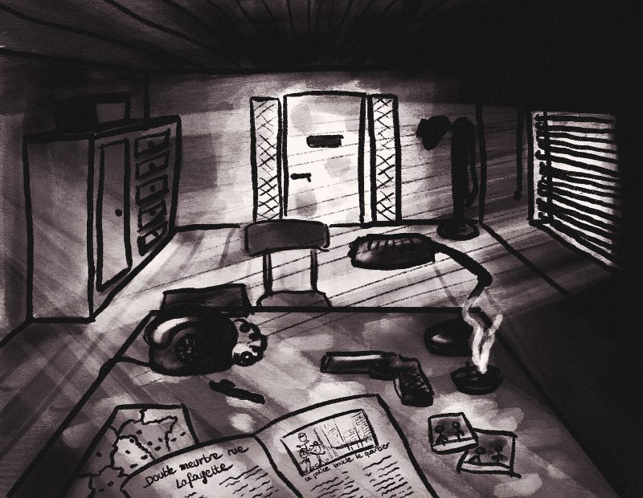

Creacover 2019 : J10
Publié le 23/01/2019 dans Dessin.
La musique du jour est Saku de Susumu Yokota.
Il s’agit d’une musique d’ambiance qui ne me transporte pas beaucoup. Je perçois comme une aura noire et vintage. J’ai donc pensé à un détective de polar et à l’atmosphère oppressante et enfumée de son cabinet privé.
Je n’ai quasiment rien réalisé de ce dessin. Diatomée a fait le croquis et appliqué les ombres et les lumières pour me montrer comment faire, mais c’était déjà tellement bien qu’il n’y avait plus rien à travailler. Si ce n’est peut-être un peu de contraste, un vieux téléphone et des écritures sur le journal.
J’ai tout de même joué avec les courbes de niveaux et appliqué un filtre "Dark Cawfee" sur le site d’édition de photoPixlr .
